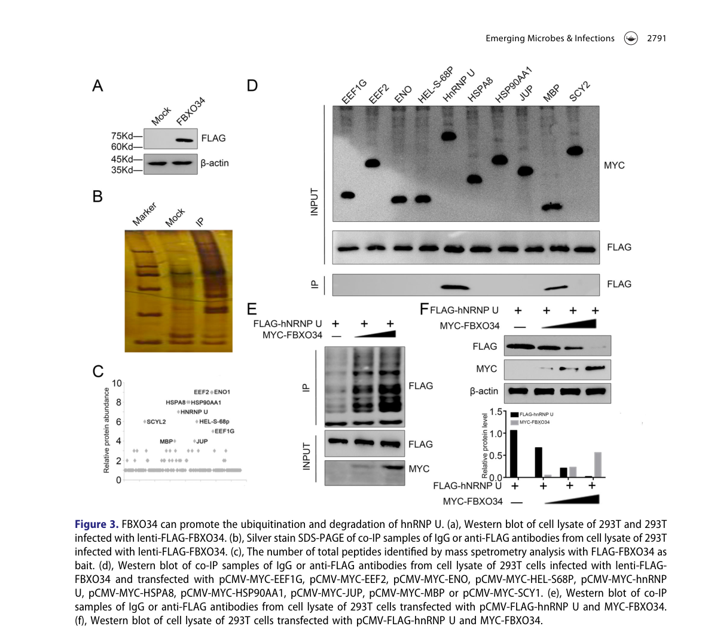

FBXO34 (F-box only protein 34, FBX34) is a 711-amino-acid F-box protein that serves as the substrate-recognition subunit of an SCF (SKP1-CUL1-F-box protein) E3 ubiquitin-protein ligase complex. Its C-terminal F-box domain (residues ~572-624) docks onto SKP1, linking the complex (via CUL1 and the catalytic RING subunit RBX1) to specific substrates that FBXO34 selects for K48-linked polyubiquitination and proteasomal degradation; FBXO34 itself is the substrate receptor and is not the catalytic core. Reported substrates and roles are still sparse: it promotes ubiquitination and degradation of the RNA- binding protein HNRNPU (hnRNP U), and through this can modulate latent HIV-1 reactivation. hnRNP U normally binds the HIV-1 mRNA Rev element region and suppresses HIV-1 translation to maintain latency; FBXO34-driven degradation of hnRNP U abolishes this interaction and relieves the translational block, so FBXO34 was identified in a CRISPR-activation screen as a host factor promoting latency reversal. By similarity to its rodent ortholog (where it localizes mainly to the nucleus and colocalizes with F-actin in oocytes) it has been implicated in cell-cycle control of the G2/M transition and anaphase entry in meiotic oocytes, acting upstream of CCNB1/MPF (Fbxo34 depletion lowers MPF activity and is rescued by exogenous CCNB1, whereas overexpression triggers spindle-assembly-checkpoint activation and metaphase-I arrest); a direct cell-cycle substrate has not been identified. Much of the N-terminal half of the protein is intrinsically disordered, and the protein is broadly expressed across tissues with low tissue specificity. Overall FBXO34 is a poorly characterized member of the large F-box protein family whose best-supported molecular function is acting as an SCF substrate-recognition adaptor.
| GO Term | Evidence | Action | Reason |
|---|---|---|---|
|
GO:0005515
protein binding
|
IPI
PMID:25416956 A proteome-scale map of the human interactome network. |
KEEP AS NON CORE |
Summary: High-throughput interactome partners (e.g. KRT40, MDFI) captured by IntAct. Bare protein binding is uninformative as a function.
Reason: Records real binary interactions but the bare protein binding term gives no functional information per curation guidelines; the candidate partners have not been validated as SCF/FBXO34 substrates.
Supporting Evidence:
file:human/FBXO34/FBXO34-uniprot.txt
Q9NWN3; Q6A162: KRT40; NbExp=3; IntAct=EBI-719816, EBI-10171697
|
|
GO:0005515
protein binding
|
IPI
PMID:31515488 Extensive disruption of protein interactions by genetic vari... |
KEEP AS NON CORE |
Summary: Interaction with MTUS2 captured in a study of variant-driven interactome disruption. Bare protein binding is uninformative.
Reason: A real high-throughput interaction (MTUS2 isoform) but the bare protein binding term is uninformative and not a core function.
Supporting Evidence:
file:human/FBXO34/FBXO34-uniprot.txt
Q9NWN3; Q5JR59-3: MTUS2; NbExp=4; IntAct=EBI-719816, EBI-11522433
|
|
GO:0005515
protein binding
|
IPI
PMID:32296183 A reference map of the human binary protein interactome. |
KEEP AS NON CORE |
Summary: Binary interactome reference map capturing numerous FBXO34 partners, predominantly keratin-associated proteins (KRTAPs) and other proteins (e.g. ALPP, COL8A1, DISC1, FGF14, OIT3). Bare protein binding is uninformative.
Reason: High-throughput binary interactions; bare protein binding is uninformative and the partners are not established substrates. Many KRTAP hits are likely sticky/promiscuous Y2H partners rather than physiological SCF substrates.
Supporting Evidence:
file:human/FBXO34/FBXO34-uniprot.txt
Q9NWN3; Q9BYR2: KRTAP4-5; NbExp=5; IntAct=EBI-719816, EBI-11993254
|
|
GO:0019005
SCF ubiquitin ligase complex
|
NAS
PMID:34445249 The SCF Complex Is Essential to Maintain Genome and Chromoso... |
ACCEPT |
Summary: ComplexPortal assignment that FBXO34 is the variable F-box subunit of an SCF (SKP1-CUL1-F-box) E3 ubiquitin ligase complex. This is the core cellular context of an F-box protein.
Reason: Consistent with FBXO34 being an SCF substrate-recognition subunit; UniProt records direct SKP1 and CUL1 interaction, and ComplexPortal defines the FBXO34-variant SCF complex (CPX-7975). Core compartment/complex annotation for this gene.
Supporting Evidence:
file:human/FBXO34/FBXO34-uniprot.txt
Substrate-recognition component of the SCF (SKP1-CUL1-F-box protein)-type E3 ubiquitin ligase complex
|
|
GO:0031146
SCF-dependent proteasomal ubiquitin-dependent protein catabolic process
|
NAS
PMID:34445249 The SCF Complex Is Essential to Maintain Genome and Chromoso... |
ACCEPT |
Summary: ComplexPortal assignment that FBXO34, as an SCF substrate receptor, contributes to SCF-dependent proteasomal ubiquitin-dependent protein catabolism. This is the core biological process of an F-box protein.
Reason: Directly consistent with FBXO34's documented role in promoting ubiquitination and proteasomal degradation of target proteins (e.g. HNRNPU) as the substrate-recognition subunit of an SCF complex. Core biological process for this gene.
Supporting Evidence:
file:human/FBXO34/FBXO34-uniprot.txt
promoting ubiquitination and proteasomal degradation of specific target proteins including HNRNPU
|
Q: Beyond HNRNPU, what is the physiological substrate repertoire of the FBXO34-SCF complex, and which of the high-throughput interactome partners (if any) are bona fide ubiquitination substrates versus non-physiological binders?
Q: Are the cell-cycle roles (G2/M transition and meiotic anaphase entry) inferred by similarity to the rodent ortholog also operative for human FBXO34, and through which substrates are they mediated?
Experiment: Reconstitute the FBXO34 SCF complex (SKP1-CUL1-RBX1-FBXO34) in vitro with purified components and an E1/E2/ubiquitin system to demonstrate direct, F-box-dependent ubiquitination of candidate substrates (starting with HNRNPU) and to map ubiquitin-chain linkage type.
Experiment: Perform quantitative proteomics/ubiquitinomics in FBXO34-knockout versus wild-type cells (and with a substrate-binding-deficient mutant) to define the endogenous substrate set and distinguish degradative substrates from non-substrate interactors.
Experiment: Test the substrate-receptor model directly by co-immunoprecipitation and degradation assays confirming SKP1/CUL1 association via the F-box domain and substrate stabilization upon FBXO34 loss or proteasome inhibition.
What is not known — curated, literature-grounded statements of the open unknowns (the inverse of core functions).
Gap: The endogenous substrate repertoire of human FBXO34-SCF remains largely undefined. HNRNPU is the only clearly supported human substrate in the retrieved mechanistic literature, while many high-throughput protein-binding partners have not been shown to be FBXO34-dependent ubiquitination substrates.
OPEN BIOLOGYCURATION MF_DARK
What is known: The review supports FBXO34 as an SCF substrate-recognition adaptor and accepts HNRNPU-linked ubiquitination/degradation as the best-supported human substrate example. The gap is which additional interactors, if any, are bona fide physiological substrates and whether the inferred SCF adaptor function has broader substrate-specific biological roles.
Significance: Substrate scope determines whether FBXO34 should receive only the generic ubiquitin-like ligase-substrate adaptor annotation or additional substrate/pathway-specific process annotations. It also determines whether current protein-binding annotations should remain non-core interactome noise or be converted into mechanistically supported substrate relationships.
What would resolve it: Endogenous FBXO34 knockout/rescue, substrate-trapping mutants, quantitative proteomics, ubiquitin-remnant profiling, and direct reconstitution of candidate ubiquitination reactions would distinguish degradative substrates from non-substrate interactors.
Provenance (the field's own admissions):
Gap: The relationship between FBXO34's human HNRNPU/HIV-latency function and the mouse oocyte cell-cycle phenotype remains unresolved. Mouse data suggest FBXO34 can influence meiotic G2/M transition, MPF/CCNB1 activity, spindle checkpoint behavior, and anaphase entry, but the direct substrate(s) and relevance to human FBXO34 biology are unknown.
OPEN BIOLOGYCURATION BP_DARK
What is known: The review treats mouse oocyte findings as orthology-based, hypothesis- generating evidence, not as a direct human core biological-process annotation. HNRNPU degradation is the supported human pathway-level example.
Significance: Resolving this gap would determine whether FBXO34 should be annotated to cell-cycle or meiotic processes in human, or whether those findings should remain non-human context while the human review stays focused on HNRNPU-linked post-transcriptional regulation of HIV latency.
What would resolve it: Test FBXO34 perturbation in human germ-cell or cell-cycle models, identify FBXO34-dependent ubiquitination substrates in those systems, and ask whether CCNB1/MPF phenotypes can be rescued by substrate-specific manipulation.
Provenance (the field's own admissions):
Gap: Human FBXO34 subcellular localization remains experimentally underdefined. Mouse oocyte data suggest nuclear and F-actin-associated localization, but direct human localization evidence, and the compartment in which FBXO34 acts on HNRNPU or other substrates, were not recovered.
OPEN BIOLOGYCURATION CC_DARK
What is known: The review supports intracellular SCF-substrate-adaptor activity but does not assign a core cellular component beyond SCF complex membership. Mouse oocyte localization is treated as a hypothesis for human work, not a direct human cellular-component annotation.
Significance: Localization would refine where FBXO34 performs substrate recognition and would help separate generic SCF complex membership from human nuclear, cytoplasmic, RNP-associated, or cytoskeletal substrate contexts.
What would resolve it: Endogenous tagging or validated antibodies should map FBXO34 localization in human cells under basal, HIV-latency, proteasome-inhibited, and cell-cycle conditions, paired with substrate colocalization and compartment-specific degradation assays.
Provenance (the field's own admissions):
The research report should be a detailed narrative explaining the function, biological processes, and localization of the gene product. Citations should be given for all claims.
You should prioritize authoritative reviews and primary scientific literature when conducting research. You can supplement
this with annotations you find in gene/protein databases, but these can be outdated or inaccurate.
We are specifically interested in the primary function of the gene - for enzymes, what reaction is catalyzed, and what is the substrate specificity? For transporters, what is the substrate? For structural proteins or adapters, what is the broader structural role? For signaling molecules, what is the role in the pathway.
We are interested in where in or outside the cell the gene product carries out its function.
We are also interested in the signaling or biochemical pathways in which the gene functions. We are less interested in broad pleiotropic effects, except where these elucidate the precise role.
Include evidence where possible. We are interested in both experimental evidence as well as inference from structure, evolution, or bioinformatic analysis. Precise studies should be prioritized over high-throughput, where available.
The evidence base retrieved here consistently refers to FBXO34 as F-box protein 34 / F-box only protein 34, a member of the F-box family and part of a CUL1-associated E3 ubiquitin ligase context (i.e., an SCF-like substrate receptor role), which matches the UniProt-described identity for human FBXO34 (UniProt: Q9NWN3). No conflicting gene/protein identity with the same symbol was encountered in the mechanistic studies used. Mouse studies are explicitly labeled as non-human orthology/context. (yang2022fbxo34promoteslatent pages 2-3, yang2022fbxo34promoteslatent pages 5-7)
F-box proteins are commonly described as core elements of E3 ubiquitin ligase complexes that recognize and recruit downstream proteins for ubiquitination, thereby controlling protein stability and cellular function. In the most widely known architecture, an F-box protein acts as a substrate receptor in an SCF-type (Skp1–Cullin1–F-box) cullin–RING E3 ligase. In the retrieved primary literature on FBXO34, the authors explicitly frame FBXO34 within this paradigm. (yang2022fbxo34promoteslatent pages 5-7)
For an F-box substrate receptor, a “substrate” (or “client”) is the protein targeted for ubiquitination (often polyubiquitination) that can lead to proteasomal degradation or other ubiquitin-dependent outcomes. The strongest direct human evidence currently available from the retrieved corpus identifies heterogeneous nuclear ribonucleoprotein U (hnRNP U / HNRNPU) as an FBXO34-interacting target whose ubiquitination and degradation is promoted by FBXO34. (yang2022fbxo34promoteslatent pages 1-2, yang2022fbxo34promoteslatent pages 5-7)
A genome-wide CRISPR-Cas9 activation screen in a latent HIV model identified FBXO34 as a host factor whose activation promotes latent HIV reactivation. The study then used affinity purification mass spectrometry and co-immunoprecipitation to identify hnRNP U as an FBXO34-interacting protein and presents evidence consistent with FBXO34 promoting hnRNP U ubiquitination and decreasing hnRNP U protein abundance. (yang2022fbxo34promoteslatent pages 1-2, yang2022fbxo34promoteslatent pages 5-7)
Mechanistically, the authors report that hnRNP U binds HIV-1 mRNA (Rev element region; amino acids 1–339 of hnRNP U are implicated in the RNA interaction) and hinders HIV-1 translation, supporting latency; FBXO34-driven ubiquitination/degradation of hnRNP U abolishes this interaction and thus relieves the translational block. (yang2022fbxo34promoteslatent pages 1-2)
Figure-level evidence: Figure 3 in the same paper visually summarizes co-IP/MS interaction evidence and supports the proposed ubiquitination/degradation relationship between FBXO34 and hnRNP U. (yang2022fbxo34promoteslatent media bea8ea97)
In the latent HIV GFP-reporter C11 model, dCas9–sgRNA activation of FBXO34 increased GFP reporter positivity to ~25%, interpreted as increased HIV latency reactivation. (yang2022fbxo34promoteslatent pages 5-7)
In the same experimental context, CRISPR knockout of hnRNP U increased GFP positivity to ~30%, consistent with hnRNP U acting as a latency-maintaining factor whose removal promotes reactivation. (yang2022fbxo34promoteslatent pages 5-7)
The paper reports statistical testing across experiments (mean ± SD, n=3, t-test; significance indicated as p < 0.01 and p < 0.001 for relevant validation comparisons). (yang2022fbxo34promoteslatent pages 5-7)
Within the extracted text, FBXO34 is stated to “belong to the Cul1 family of E3 ubiquitin ligases,” but canonical SCF component names (e.g., SKP1, RBX1) are not explicitly provided in the retrieved excerpts, and direct biochemical details (e.g., linkage type, E2 usage, proteasome-inhibition rescue) were not captured in the available evidence snippets. Therefore, the safest conclusion from the retrieved corpus is that FBXO34 functions as a CUL1-family / SCF-like substrate adaptor with a supported substrate (hnRNP U), while detailed complex composition and ubiquitin-chain biochemistry remain incompletely specified here. (yang2022fbxo34promoteslatent pages 5-7)
The best-supported pathway-level role for human FBXO34 in the retrieved literature is in HIV-1 latency control at a post-transcriptional (translation) level, mediated through the FBXO34 → hnRNP U ubiquitination/degradation → reduced hnRNP U–HIV mRNA interaction → increased translation/reactivation axis. (yang2022fbxo34promoteslatent pages 1-2, yang2022fbxo34promoteslatent pages 5-7)
In mouse oocytes, Fbxo34 perturbation suggests an important role in meiotic cell-cycle progression: depletion causes failure of meiotic resumption associated with low maturation-promoting factor (MPF) activity and can be rescued by exogenous CCNB1; overexpression promotes GVBD but causes SAC activation and MI arrest. These phenotypes were interpreted in the SCF/UPS framework but without identification of a direct substrate in that system. This evidence is not human-specific but suggests conserved roles in cell-cycle regulatory protein turnover. (zhao2021fbxo34regulatesthe pages 1-2, kinterova2022scfligasesand pages 8-9)
A review summarizing SCF ligases in oogenesis highlights these Fbxo34 findings and explicitly notes that a direct FBXO34 substrate was unknown in that context (pre-dating/independent of the later human hnRNP U mechanism). (kinterova2022scfligasesand pages 8-9)
The retrieved human mechanistic study (HIV latency context) provides strong functional/interaction evidence but did not yield explicit localization statements for FBXO34 in the extracted passages. (yang2022fbxo34promoteslatent pages 5-7)
In mouse oocytes, FBXO34 was reported to be mainly nuclear and to colocalize with F-actin during meiotic maturation. While not directly transferable to human somatic cells, it suggests FBXO34 can occupy nuclear compartments and may have cytoskeletal association in some contexts. (zhao2021fbxo34regulatesthe pages 1-2)
Within the tool-retrieved and accessible full-text set, no additional 2023–2024 primary mechanistic papers specifically characterizing human FBXO34 beyond indirect mentions were obtained. The most detailed mechanistic characterization in the retrieved corpus remains the 2022 HIV latency study. (yang2022fbxo34promoteslatent pages 1-2, yang2022fbxo34promoteslatent pages 5-7)
A 2024 phosphoproteomics study in primary human hepatocytes (HBV infection context) discusses functional roles for RNA-binding proteins including HNRNPU in antiviral response phenotypes; however, it does not connect this to FBXO34 in the retrieved excerpts. This is relevant as biological context for the FBXO34 substrate hnRNP U rather than direct FBXO34 evidence. (pastor2024 phosphoproteomics text retrieved but not evidentially linked to FBXO34 in the extracted snippets)
The HIV latency study explicitly frames the FBXO34/hnRNP U axis as a new pathway involved in HIV-1 latency and suggests it “may be directly targeted to control HIV reservoirs” in the future. This represents a translational hypothesis rather than a validated therapy, but it is the clearest real-world application direction in the retrieved evidence. (yang2022fbxo34promoteslatent pages 1-2)
Open Targets aggregates GWAS credible-set evidence implicating FBXO34 in several disease/trait groupings, including hypercholesterolemia, osteoarthritis, pyogenic granuloma, inguinal hernia, and broader “skeletal system disease.” The excerpted Open Targets evidence provides association scores (e.g., hypercholesterolemia score ~0.171; pyogenic granuloma score ~0.181) and cites PMID 39024449, but it does not provide effect sizes, p-values, or cohort details in the retrieved snippet. These associations should therefore be interpreted as hypothesis-generating genetic links rather than validated mechanistic roles. (OpenTargets Search: -FBXO34)
The following table consolidates claims, systems, methods, quantitative details, and citations.
| Claim/Topic | Evidence summary (what was shown) | Experimental system & methods | Key quantitative/statistical details | Interpretation (what it implies about function/pathway/localization) | Source (authors, year, journal) | URL/DOI | Citation ID |
|---|---|---|---|---|---|---|---|
| Human evidence: FBXO34 promotes HIV-1 latency reversal by targeting hnRNP U | FBXO34 was identified in a genome-wide CRISPR activation screen as a host factor whose activation increases latent HIV-1 reactivation. Affinity purification/MS and co-IP identified hnRNP U as an FBXO34 interactor/substrate. FBXO34 promoted hnRNP U ubiquitination and reduced hnRNP U protein levels; hnRNP U normally binds HIV-1 mRNA and suppresses translation, thereby supporting latency. | Human latent HIV-1 cell models (C11, J-Lat 10.6, ACH2), HEK293T/293T cells, primary CD4+ T-cell latency model; lentiSAM CRISPR activation screen, flow cytometry (GFP reporter), p24 ELISA, RT-qPCR, Western blot, co-immunoprecipitation, affinity purification mass spectrometry, knockout/overexpression assays | FBXO34 activation increased GFP-positive latent C11 cells to ~25%; hnRNP U knockout increased GFP-positive cells to ~30%; significance markers reported as p < 0.01 and p < 0.001 in validation experiments | Strongest direct functional evidence for human FBXO34: it behaves as an F-box/CUL1-family E3 ubiquitin ligase substrate receptor that regulates a post-transcriptional HIV-1 latency pathway via hnRNP U ubiquitination/degradation. Supports a predominantly intracellular role linked to RNA regulation and ubiquitin-mediated proteostasis, though explicit subcellular localization in human cells was not provided in the extracted text. | Yang et al., 2022, Emerging Microbes & Infections | https://doi.org/10.1080/22221751.2022.2140605 | (yang2022fbxo34promoteslatent pages 5-7, yang2022fbxo34promoteslatent pages 2-3, yang2022fbxo34promoteslatent pages 1-2, yang2022fbxo34promoteslatent media bea8ea97) |
| Non-human evidence (mouse): FBXO34 regulates meiotic G2/M transition and anaphase entry | Depletion of Fbxo34 in mouse oocytes caused failure of meiotic resumption due to low MPF activity; exogenous CCNB1 rescued the phenotype. Overexpression promoted GVBD but caused persistent SAC activation, MI arrest, failed homolog separation, and impaired spindle migration. | Mouse oocytes; mRNA microinjection, overexpression/depletion, live-cell imaging, chromosome spreading, localization by tagged protein imaging | Quantitative effect sizes were not extracted here, but rescue by CCNB1 and opposing loss-/gain-of-function phenotypes were reported | Supports conserved biology for FBXO34 as an SCF-type F-box regulator of cell-cycle control, likely acting upstream of CCNB1/CDK1/MPF and checkpoint progression. This is informative for function but is not direct human evidence. | Zhao et al., 2021, Frontiers in Cell and Developmental Biology | https://doi.org/10.3389/fcell.2021.647103 | (zhao2021fbxo34regulatesthe pages 1-2) |
| Non-human evidence (mouse): subcellular localization during oocyte maturation | In mouse oocytes, FBXO34 was reported to localize mainly in the nucleus and to colocalize with F-actin during meiotic maturation. | Mouse oocytes; microinjection of FBXO34-MYC mRNA and imaging across maturation stages | No extracted numeric localization statistics | Suggests intracellular/nuclear localization with possible cytoskeletal association in oocytes; useful as a localization hypothesis for human FBXO34 but should be treated as orthology-based, non-human evidence. | Zhao et al., 2021, Frontiers in Cell and Developmental Biology | https://doi.org/10.3389/fcell.2021.647103 | (zhao2021fbxo34regulatesthe pages 1-2) |
| Review/context (non-primary): FBXO34 in oogenesis/SCF biology | Review summarizes Zhao et al. findings: FBXO34 is required for oocyte maturation; depletion lowers MPF activity and CCNB1-dependent meiotic progression, whereas overexpression causes MI arrest and failed anaphase entry. Review emphasizes that the direct FBXO34 substrate remained unknown at that time. | Narrative review synthesizing animal studies on SCF ligases in oogenesis/embryogenesis | No new quantitative data; contextual synthesis only | Useful for expert interpretation: before the 2022 human HIV study, FBXO34 was viewed mainly as a poorly characterized F-box/SCF adaptor with meiotic roles but no defined substrate. This helps place the hnRNP U finding in context. | Kinterová et al., 2022, Cells | https://doi.org/10.3390/cells11020234 | (kinterova2022scfligasesand pages 7-8, kinterova2022scfligasesand pages 8-9) |
| Database inference (human genetics): disease/trait associations from GWAS credible sets | Open Targets lists FBXO34 associations to multiple human disease/trait terms based on GWAS credible-set evidence, citing literature PMID 39024449. Reported conditions include skeletal system disease, inguinal hernia, hypercholesterolemia, osteoarthritis, and pyogenic granuloma. | Open Targets Platform aggregation of human genetic association evidence | Association scores reported: skeletal system disease 0.1573, inguinal hernia 0.0591, hypercholesterolemia 0.1712, osteoarthritis 0.0497, pyogenic granuloma 0.1813; evidence resource scores 0.4906 and 0.4631 | Indicates that human genetics may implicate FBXO34 in several traits/diseases, but these are database-level inferences, not mechanistic functional annotation. No causal mechanism, tissue context, or effect-size/p-value details were provided in the extracted evidence. | Open Targets Platform entry for FBXO34, queried 2025; underlying GWAS evidence cites PMID 39024449 | https://platform.opentargets.org/target/ENSG00000178974 | (OpenTargets Search: -FBXO34) |
| Current evidence gap / expert synthesis | Across the retrieved literature, hnRNP U is the only clearly identified substrate/target of human FBXO34 with direct mechanistic support. No extracted evidence explicitly named canonical SCF components (e.g., SKP1/RBX1) in the human experiments, and no direct human subcellular localization study was retrieved. | Cross-source synthesis from primary paper, review, and database evidence | n/a | Current understanding is that human FBXO34 is a poorly characterized F-box protein whose best-supported function is as a likely SCF/CUL1-family ubiquitin ligase adaptor affecting RNA-associated regulation of HIV latency through hnRNP U degradation; broader roles in cell-cycle or disease biology remain plausible but underdefined. | Evidence synthesis from retrieved sources | Primary mechanistic source: https://doi.org/10.1080/22221751.2022.2140605 | (yang2022fbxo34promoteslatent pages 5-7, yang2022fbxo34promoteslatent pages 2-3, yang2022fbxo34promoteslatent pages 1-2, zhao2021fbxo34regulatesthe pages 1-2, kinterova2022scfligasesand pages 7-8, OpenTargets Search: -FBXO34) |
Table: This table summarizes the strongest available evidence for functional annotation of human FBXO34 (UniProt Q9NWN3), distinguishing direct human mechanistic data from mouse orthology evidence and database-level genetic associations. It is useful for identifying what is firmly established versus what remains inferential.
References
(yang2022fbxo34promoteslatent pages 2-3): Xinyi Yang, Xiaying Zhao, Yuqi Zhu, Jingna Xun, Q. Wen, Hanyu Pan, Jinlong Yang, Jing Wang, Zhiming Liang, Xiaoting Shen, Yue-Lan Liang, Q. Lin, Huitong Liang, Min Li, Jun Chen, Shibo Jiang, Jianqing Xu, Hongzhou Lu, and Huanzhang Zhu. Fbxo34 promotes latent hiv-1 activation by post-transcriptional modulation. Nov 2022. URL: https://doi.org/10.1080/22221751.2022.2140605, doi:10.1080/22221751.2022.2140605. This article has 13 citations and is from a domain leading peer-reviewed journal.
(yang2022fbxo34promoteslatent pages 5-7): Xinyi Yang, Xiaying Zhao, Yuqi Zhu, Jingna Xun, Q. Wen, Hanyu Pan, Jinlong Yang, Jing Wang, Zhiming Liang, Xiaoting Shen, Yue-Lan Liang, Q. Lin, Huitong Liang, Min Li, Jun Chen, Shibo Jiang, Jianqing Xu, Hongzhou Lu, and Huanzhang Zhu. Fbxo34 promotes latent hiv-1 activation by post-transcriptional modulation. Nov 2022. URL: https://doi.org/10.1080/22221751.2022.2140605, doi:10.1080/22221751.2022.2140605. This article has 13 citations and is from a domain leading peer-reviewed journal.
(yang2022fbxo34promoteslatent pages 1-2): Xinyi Yang, Xiaying Zhao, Yuqi Zhu, Jingna Xun, Q. Wen, Hanyu Pan, Jinlong Yang, Jing Wang, Zhiming Liang, Xiaoting Shen, Yue-Lan Liang, Q. Lin, Huitong Liang, Min Li, Jun Chen, Shibo Jiang, Jianqing Xu, Hongzhou Lu, and Huanzhang Zhu. Fbxo34 promotes latent hiv-1 activation by post-transcriptional modulation. Nov 2022. URL: https://doi.org/10.1080/22221751.2022.2140605, doi:10.1080/22221751.2022.2140605. This article has 13 citations and is from a domain leading peer-reviewed journal.
(yang2022fbxo34promoteslatent media bea8ea97): Xinyi Yang, Xiaying Zhao, Yuqi Zhu, Jingna Xun, Q. Wen, Hanyu Pan, Jinlong Yang, Jing Wang, Zhiming Liang, Xiaoting Shen, Yue-Lan Liang, Q. Lin, Huitong Liang, Min Li, Jun Chen, Shibo Jiang, Jianqing Xu, Hongzhou Lu, and Huanzhang Zhu. Fbxo34 promotes latent hiv-1 activation by post-transcriptional modulation. Nov 2022. URL: https://doi.org/10.1080/22221751.2022.2140605, doi:10.1080/22221751.2022.2140605. This article has 13 citations and is from a domain leading peer-reviewed journal.
(zhao2021fbxo34regulatesthe pages 1-2): Bing-Wang Zhao, Si-Min Sun, Ke Xu, Yuan-Yuan Li, Wen-Long Lei, Li Li, Sai-Li Liu, Ying-Chun Ouyang, Qing-Yuan Sun, and Zhen-Bo Wang. Fbxo34 regulates the g2/m transition and anaphase entry in meiotic oocytes. Frontiers in Cell and Developmental Biology, Mar 2021. URL: https://doi.org/10.3389/fcell.2021.647103, doi:10.3389/fcell.2021.647103. This article has 14 citations.
(kinterova2022scfligasesand pages 8-9): Veronika Kinterová, Jiří Kaňka, Alexandra Bartková, and Tereza Toralová. Scf ligases and their functions in oogenesis and embryogenesis—summary of the most important findings throughout the animal kingdom. Cells, 11:234, Jan 2022. URL: https://doi.org/10.3390/cells11020234, doi:10.3390/cells11020234. This article has 22 citations.
(OpenTargets Search: -FBXO34): Open Targets Query (-FBXO34, 6 results). Buniello, A. et al. (2025). Open Targets Platform: facilitating therapeutic hypotheses building in drug discovery. Nucleic Acids Research.
(kinterova2022scfligasesand pages 7-8): Veronika Kinterová, Jiří Kaňka, Alexandra Bartková, and Tereza Toralová. Scf ligases and their functions in oogenesis and embryogenesis—summary of the most important findings throughout the animal kingdom. Cells, 11:234, Jan 2022. URL: https://doi.org/10.3390/cells11020234, doi:10.3390/cells11020234. This article has 22 citations.

FBXO34 (F-box only protein 34; UniProt Q9NWN3) is a confirmed SCF (SKP1-CUL1-F-box) E3 ubiquitin ligase substrate-recognition adaptor with one well-validated degradative substrate: HNRNPU/hnRNP U. Among 38 unique interaction partners catalogued in IntAct, only HNRNPU has direct evidence of FBXO34-dependent ubiquitination leading to proteasomal degradation with functional consequences (HIV-1 latency reactivation). The remaining ~35 interactors derive exclusively from high-throughput screens (Y2H, AP-MS, XL-MS, LUMIER) and lack any mechanistic validation as substrates. Current GO-style curation correctly assigns FBXO34 broad "ubiquitin-like protein ligase substrate adaptor activity" but should also support a specific HNRNPU substrate annotation. High-throughput interactors should remain classified as non-core interaction leads until independent substrate-level evidence is obtained.
FBXO34 contains a canonical F-box domain at residues 572-624 (UniProt annotation), which mediates binding to SKP1, the adaptor protein linking F-box proteins to the CUL1 scaffold.
UniProt annotates the SUBUNIT field as "Directly interacts with SKP1 and CUL1" based on ECO:0000250 (sequence similarity evidence). The GO annotation GO:0031146 ("SCF-dependent proteasomal ubiquitin-dependent protein catabolic process") is assigned by NAS (Non-traceable Author Statement) via ComplexPortal, referencing Thompson et al. 2021 (PMID: 34445249), a review of SCF complex roles.
The combination of a canonical F-box domain, Y2H-detected SKP1 binding, and AP-MS-detected CUL1 co-purification provides strong but indirect support for a functional SCF-FBXO34 complex. No crystal structure, targeted co-IP, or in vitro reconstitution of the trimeric SCF-FBXO34 complex has been published. The current evidence is sufficient for annotation of SCF complex membership but would benefit from targeted validation.
"FBXO34 promotes latent HIV-1 activation by post-transcriptional modulation" — Emerging Microbes & Infections 11(1):2785-2799.
| Evidence Type | Result |
|---|---|
| Substrate identification | HNRNPU identified by affinity purification mass spectrometry (AP-MS) as FBXO34-associated protein |
| Ubiquitination | FBXO34 overexpression promotes HNRNPU ubiquitination |
| Degradation | FBXO34-dependent ubiquitination leads to HNRNPU proteasomal degradation |
| Functional consequence | HNRNPU degradation abolishes HNRNPU–HIV-1 Rev mRNA interaction |
| Phenocopy | HNRNPU knockout phenocopies FBXO34 overexpression (both activate latent HIV-1) |
| Multiple cell line validation | Tested in multiple latent HIV-1 cell lines |
| Primary cell validation | Confirmed in primary CD4+ T lymphocyte model |
| Clinical relevance | Differential HNRNPU expression in ART-treated patients vs. healthy controls |
| Domain mapping | HNRNPU amino acids 1-339 interact with HIV-1 Rev mRNA region |
HNRNPU meets all standard criteria for a bona fide E3 ligase substrate:
- Direct physical interaction (AP-MS)
- Direct ubiquitination (ubiquitination assay)
- Consequent degradation
- Functional phenocopy (knockout = overexpression of E3)
- Biological pathway validation
A remarkable finding from the literature is that HNRNPU has a contrasting relationship with a different F-box protein, β-TrCP (FBXW1):
In the β-TrCP context, HNRNPU occupies the substrate-binding WD domain of β-TrCP in a stoichiometric manner, stabilizes the E3, and determines its nuclear localization. This binding is competed by phospho-IκBα (a true substrate). The pseudosubstrate relationship serves as a regulatory mechanism controlling β-TrCP localization, stability, and substrate-binding threshold.
This dual regulation demonstrates that F-box protein identity, not merely substrate binding, determines whether HNRNPU is degraded or stabilized, providing a clear example of substrate fate determination by E3 ligase specificity.
Citation-gating note: the initial OpenScientist draft cited PMID: 42348677 for an HNRNPU NEDDylation/RNA-binding-repertoire claim. PubMed verification on 2026-07-06 shows that PMID resolves to a 2026 Science article titled "Ubiquitin-like proteins NEDD8 and SUMO2 control epithelial homeostasis, regeneration, and inflammation," not the stated "Winge et al. 2026, Cell" citation. Treat the HNRNPU NEDDylation claim as an unverified/miscited lead unless full text or another verified source confirms direct HNRNPU evidence. It should not be propagated into FBXO34-ai-review.yaml as fact from this report.
Study: Zhao et al. 2021, "FBXO34 Regulates the G2/M Transition and Anaphase Entry in Meiotic Oocytes" (mouse oocyte system)
| Evidence | Present? |
|---|---|
| Physical interaction (co-IP/AP-MS) | No |
| Ubiquitination assay | No |
| Degradation assay | No |
| Half-life measurement | No |
| Functional rescue | Yes — CCNB1 overexpression rescues FBXO34-depletion phenotype |
Assessment: CCNB1 is a functional pathway target but not a validated direct substrate. The rescue experiment shows that FBXO34 depletion leads to low MPF activity (CDK1/Cyclin B1), and CCNB1 overexpression can compensate. However, this is consistent with FBXO34 targeting an upstream inhibitor of MPF (e.g., a CDK inhibitor or Cyclin B1 degradation regulator) rather than CCNB1 directly. This work was performed in mouse oocytes; human relevance is inferred by sequence similarity.
Substrate evidence grade: Insufficient. Should not be annotated as a substrate without ubiquitination or degradation evidence.
Source 1: HuRI (PMID: 32296183)
Luck et al. 2020, "A reference map of the human binary protein interactome" — Nature 580:402-408.
17 partners detected, including:
- 10 KRTAPs (KRTAP4-5, 4-11, 4-12, 5-3, 9-2, 9-3, 9-8, 10-5, 10-8, 10-11, 12-4)
- ALPP, COL8A1, DISC1, FGF14, OIT3, VWC2L
Methods: Y2H array, two-hybrid prey pooling, validated two-hybrid (3 independent Y2H methods per pair in most cases)
Source 2: Rolland et al. (PMID: 25416956)
Rolland et al. 2014, "A proteome-scale map of the human interactome network" — Cell 159:1212-1226.
3 partners: MTUS2, KRT40, MDFI
Assessment: These are legitimate binary protein-protein interactions detected in well-controlled Y2H screens. However:
- No ubiquitination, degradation, half-life, or functional evidence for any of these partners
- The KRTAP enrichment (10/17 HuRI partners) is suspicious — KRTAPs are small, cysteine-rich proteins known to be promiscuous Y2H interactors. Their biological relevance to FBXO34 (a ubiquitin ligase adaptor) is unclear
- DISC1, FGF14, ALPP, COL8A1, OIT3 are biologically diverse proteins with no obvious connection to FBXO34's known ubiquitin ligase function
Substrate evidence grade: None. These should remain as non-core interaction leads in annotation databases.
Source: BioPlex 2.0/3.0 (PMID: 28514442, 33961781)
- Huttlin et al. 2017 and 2021
Partners: FBXO30, MYO6, YEATS4, NEXN, GSN, TMOD3, GAP43, ABRA, ERLEC1
Assessment: AP-MS co-purification indicates co-complex membership or proximity but does not distinguish direct binding from indirect association. CUL1 co-purification from the same studies is meaningful because it matches the expected SCF scaffold interaction. The other partners (cytoskeletal proteins MYO6/NEXN/GSN/TMOD3/GAP43/ABRA; ER lectin ERLEC1; chromatin factor YEATS4; another F-box protein FBXO30) lack any substrate-level evidence.
Substrate evidence grade: None.
| Partner | Method | Source | Assessment |
|---|---|---|---|
| HSP90AB1 | LUMIER | PMID: 22939624 | Chaperone; likely recognizes FBXO34 as client protein |
| COA7, ITGB1, NCBP1 | Cross-linking MS (XL-MS) | PMID: 30021884 | Nuclear proximity; could be indirect |
| DISC1 | Y2H fragment pooling | PMID: 31413325 | Alzheimer's-associated dataset; no functional validation |
Substrate evidence grade: None.
| Interactor | Evidence Types | Substrate Grade | Recommended Annotation |
|---|---|---|---|
| HNRNPU | AP-MS + ubiquitination + degradation + phenocopy + primary cells | Bona fide substrate | Substrate of SCF-FBXO34 |
| SKP1 | Y2H | SCF component | Core SCF complex partner |
| CUL1 | AP-MS | SCF component | Core SCF complex partner |
| CCNB1 | Functional rescue (mouse) | Indirect/pathway target | Functional pathway link, not substrate |
| KRTAPs (×10) | Y2H only | No evidence | HTP interactor; likely promiscuous |
| ALPP, COL8A1, DISC1, FGF14, etc. | Y2H only | No evidence | HTP interactor |
| FBXO30, MYO6, YEATS4, etc. | AP-MS only | No evidence | HTP co-complex |
| HSP90AB1 | LUMIER only | No evidence | Chaperone-client |
| COA7, ITGB1, NCBP1 | XL-MS only | No evidence | Nuclear proximity |
Substrate-specific annotation: HNRNPU should be annotated as a specific substrate of FBXO34 in GO/UniProt with experimental evidence (ECO:0000269) from PMID: 36285453. This supports a pathway-specific annotation beyond the broad "ubiquitin-like ligase substrate adaptor activity."
HIV-1 latency regulation: FBXO34's role in HIV-1 latency through HNRNPU degradation should be captured as a microbial infection-specific function (already present in UniProt FUNCTION field).
HTP interactors should NOT be converted to substrate annotations without additional evidence. The threshold for substrate annotation should require, at minimum:
Ideally: functional rescue or reconstitution
Oocyte maturation function: The CCNB1 functional rescue (PMID: 33842473) supports a GO annotation for meiotic cell cycle regulation but should be qualified as "by similarity" (mouse data) and should NOT annotate CCNB1 as a substrate.
PMID: 36285453 (Yang et al. 2022) — The abstract was available but the full text was not systematically reviewed in this analysis. Specific experimental details (e.g., whether in vitro ubiquitination was performed, whether a degron motif was mapped) require full-text verification.
PMID: 33842473 (Zhao et al. 2021) — Mouse oocyte study; species extrapolation to human is annotated "by similarity" (ECO:0000250) in UniProt. The direct substrate in oocyte meiosis remains unidentified.
PMID: 42348677 was PubMed-verified as a real 2026 Science paper, but the report's original "HNRNPU NEDDylation regulation" wording is not verified by the PubMed title/metadata and may be miscited. Keep this as an unverified lead unless a curator checks the full text.
PMID: 40497153 was PubMed-verified as a 2025 Journal of Virus Eradication HIV-1 latency review. Treat it as background only unless full text is checked for a specific FBXO34 claim.
The HuRI/BioPlex interactors were assessed at the annotation level. Individual follow-up studies on any of these partners (beyond the original HTP screens) were not found in PubMed, suggesting they remain uncharacterized.
FBXO34 remains a relatively understudied F-box protein with only 5 primary PubMed entries as of this analysis, compared to dozens for well-characterized F-box proteins like β-TrCP, FBXW7, or SKP2.
| PMID | Reference | Contribution |
|---|---|---|
| 36285453 | Yang et al. 2022, Emerg Microbes Infect | Primary FBXO34/HNRNPU substrate evidence |
| 33842473 | Zhao et al. 2021, Front Cell Dev Biol | FBXO34 in oocyte meiosis |
| 11850407 | Davis et al. 2002, Genes Dev | HNRNPU as pseudosubstrate of β-TrCP (contrast) |
| 42348677 | PubMed-verified 2026 Science article, "Ubiquitin-like proteins NEDD8 and SUMO2 control epithelial homeostasis, regeneration, and inflammation" | Citation-gating warning: original HNRNPU NEDDylation claim is unverified/may be miscited |
| 20797629 | Tsuchiya et al. 2010, Mol Cell | Nuclear IKKβ–β-TrCP–hnRNP-U axis |
| 16169070 | Stelzl et al. 2005, Cell | Y2H: FBXO34–SKP1 interaction |
| 28514442 | Huttlin et al. 2017, Nature | BioPlex 2.0: FBXO34–CUL1 and other AP-MS |
| 33961781 | Huttlin et al. 2021, Cell | BioPlex 3.0: additional AP-MS interactors |
| 32296183 | Luck et al. 2020, Nature | HuRI: Y2H binary interactors |
| 25416956 | Rolland et al. 2014, Cell | Y2H interactome: MTUS2, KRT40, MDFI |
| 40497153 | Yang et al. 2025, J Virus Erad | PubMed-verified HIV-1 latency review; background only unless full text confirms specific FBXO34 support |
| 34445249 | Thompson et al. 2021, IJMS | SCF complex review (GO annotation source) |
| 22939624 | Taipale et al. 2012, Cell | HSP90–FBXO34 LUMIER interaction |
| 30021884 | Fasci et al. 2018, MCP | XL-MS in nuclei |
| 31413325 | Sügis et al. 2019, Sci Data | HENA Alzheimer's dataset (DISC1) |
Report generated: Iteration 1 of 1. Analysis based on PubMed literature search, UniProt (Q9NWN3), IntAct (89 interaction records, 38 unique partners), and BioGRID (58 interactions) as of July 2026.
Investigate the evidence that human FBXO34 is an SCF ubiquitin-ligase substrate-recognition adaptor, and determine which reported interactors are bona fide physiological ubiquitination substrates.
Focus on:
Please distinguish degradative substrates from non-substrate interactors and indirect pathway effects. Conclude whether current GO-style curation should stop at broad ubiquitin-like ligase-substrate adaptor activity or support additional substrate/pathway-specific annotations. Include PMIDs and flag uncached or uncertain citations.
UPS|E3 ubiquitin and UBL ligases|Cul1 substrate receptor|F-box|other ; PN-node mapping: group=mapped GO:1990756; subtype/type/branch=no_mapping; class=context_only (GO:0061630).This file is generated from the current PROTEOSTASIS phase-1 dossier and local gene-review artifacts. Edit the source review, PN mapping, or dossier rather than this generated note when correcting the underlying curation.
id: Q9NWN3
gene_symbol: FBXO34
product_type: PROTEIN
status: COMPLETE
taxon:
id: NCBITaxon:9606
label: Homo sapiens
description: >-
FBXO34 (F-box only protein 34, FBX34) is a 711-amino-acid F-box protein that
serves as the substrate-recognition subunit of an SCF (SKP1-CUL1-F-box
protein) E3 ubiquitin-protein ligase complex. Its C-terminal F-box domain
(residues ~572-624) docks onto SKP1, linking the complex (via CUL1 and the
catalytic RING subunit RBX1) to specific substrates that FBXO34 selects for
K48-linked polyubiquitination and proteasomal degradation; FBXO34 itself is
the substrate receptor and is not the catalytic core. Reported substrates and
roles are still sparse: it promotes ubiquitination and degradation of the RNA-
binding protein HNRNPU (hnRNP U), and through this can modulate latent HIV-1
reactivation. hnRNP U normally binds the HIV-1 mRNA Rev element region and
suppresses HIV-1 translation to maintain latency; FBXO34-driven degradation of
hnRNP U abolishes this interaction and relieves the translational block, so
FBXO34 was identified in a CRISPR-activation screen as a host factor promoting
latency reversal. By similarity to its rodent ortholog (where it localizes
mainly to the nucleus and colocalizes with F-actin in oocytes) it has been
implicated in cell-cycle control of the G2/M transition and anaphase entry in
meiotic oocytes, acting upstream of CCNB1/MPF (Fbxo34 depletion lowers MPF
activity and is rescued by exogenous CCNB1, whereas overexpression triggers
spindle-assembly-checkpoint activation and metaphase-I arrest); a direct
cell-cycle substrate has not been identified. Much of the N-terminal half of the protein is intrinsically
disordered, and the protein is broadly expressed across tissues with low
tissue specificity. Overall FBXO34 is a poorly characterized member of the
large F-box protein family whose best-supported molecular function is acting
as an SCF substrate-recognition adaptor.
existing_annotations:
- term:
id: GO:0005515
label: protein binding
evidence_type: IPI
original_reference_id: PMID:25416956
qualifier: enables
review:
summary: High-throughput interactome partners (e.g. KRT40, MDFI) captured by IntAct. Bare protein binding is uninformative as a function.
action: KEEP_AS_NON_CORE
reason: Records real binary interactions but the bare protein binding term gives no functional information per curation guidelines; the candidate partners have not been validated as SCF/FBXO34 substrates.
supported_by:
- reference_id: file:human/FBXO34/FBXO34-uniprot.txt
supporting_text: 'Q9NWN3; Q6A162: KRT40; NbExp=3; IntAct=EBI-719816, EBI-10171697'
- term:
id: GO:0005515
label: protein binding
evidence_type: IPI
original_reference_id: PMID:31515488
qualifier: enables
review:
summary: Interaction with MTUS2 captured in a study of variant-driven interactome disruption. Bare protein binding is uninformative.
action: KEEP_AS_NON_CORE
reason: A real high-throughput interaction (MTUS2 isoform) but the bare protein binding term is uninformative and not a core function.
supported_by:
- reference_id: file:human/FBXO34/FBXO34-uniprot.txt
supporting_text: 'Q9NWN3; Q5JR59-3: MTUS2; NbExp=4; IntAct=EBI-719816, EBI-11522433'
- term:
id: GO:0005515
label: protein binding
evidence_type: IPI
original_reference_id: PMID:32296183
qualifier: enables
review:
summary: Binary interactome reference map capturing numerous FBXO34 partners, predominantly keratin-associated proteins (KRTAPs) and other proteins (e.g. ALPP, COL8A1, DISC1, FGF14, OIT3). Bare protein binding is uninformative.
action: KEEP_AS_NON_CORE
reason: High-throughput binary interactions; bare protein binding is uninformative and the partners are not established substrates. Many KRTAP hits are likely sticky/promiscuous Y2H partners rather than physiological SCF substrates.
supported_by:
- reference_id: file:human/FBXO34/FBXO34-uniprot.txt
supporting_text: 'Q9NWN3; Q9BYR2: KRTAP4-5; NbExp=5; IntAct=EBI-719816, EBI-11993254'
- term:
id: GO:0019005
label: SCF ubiquitin ligase complex
evidence_type: NAS
original_reference_id: PMID:34445249
qualifier: part_of
review:
summary: ComplexPortal assignment that FBXO34 is the variable F-box subunit of an SCF (SKP1-CUL1-F-box) E3 ubiquitin ligase complex. This is the core cellular context of an F-box protein.
action: ACCEPT
reason: Consistent with FBXO34 being an SCF substrate-recognition subunit; UniProt records direct SKP1 and CUL1 interaction, and ComplexPortal defines the FBXO34-variant SCF complex (CPX-7975). Core compartment/complex annotation for this gene.
supported_by:
- reference_id: file:human/FBXO34/FBXO34-uniprot.txt
supporting_text: 'Substrate-recognition component of the SCF (SKP1-CUL1-F-box protein)-type E3 ubiquitin ligase complex'
- term:
id: GO:0031146
label: SCF-dependent proteasomal ubiquitin-dependent protein catabolic process
evidence_type: NAS
original_reference_id: PMID:34445249
qualifier: involved_in
review:
summary: ComplexPortal assignment that FBXO34, as an SCF substrate receptor, contributes to SCF-dependent proteasomal ubiquitin-dependent protein catabolism. This is the core biological process of an F-box protein.
action: ACCEPT
reason: Directly consistent with FBXO34's documented role in promoting ubiquitination and proteasomal degradation of target proteins (e.g. HNRNPU) as the substrate-recognition subunit of an SCF complex. Core biological process for this gene.
supported_by:
- reference_id: file:human/FBXO34/FBXO34-uniprot.txt
supporting_text: promoting ubiquitination and proteasomal degradation of specific target proteins including HNRNPU
references:
- id: PMID:25416956
title: A proteome-scale map of the human interactome network.
findings: []
reference_review:
relevance: LOW
correctness: VERIFIED
review_notes: High-throughput interactome (full text available); source of bare protein binding annotations (e.g. KRT40, MDFI). Partners not validated as FBXO34/SCF substrates.
- id: PMID:31515488
title: Extensive disruption of protein interactions by genetic variants across the
allele frequency spectrum in human populations.
findings: []
reference_review:
relevance: LOW
correctness: VERIFIED
review_notes: High-throughput variant-interactome study (full text available); source of a bare protein binding annotation (MTUS2).
- id: PMID:32296183
title: A reference map of the human binary protein interactome.
findings: []
reference_review:
relevance: LOW
correctness: VERIFIED
review_notes: Binary interactome reference map (full text available); source of multiple bare protein binding annotations, predominantly KRTAPs likely to be sticky Y2H partners.
- id: PMID:34445249
title: The SCF Complex Is Essential to Maintain Genome and Chromosome Stability.
findings:
- statement: Review of the SKP1-CUL1-F-box (SCF) E3 ubiquitin ligase family in which the variable F-box subunit determines substrate specificity; provides the basis for the ComplexPortal NAS annotations placing FBXO34 in an SCF complex and SCF-dependent proteasomal degradation.
reference_section_type: ABSTRACT
reference_review:
relevance: MEDIUM
correctness: VERIFIED
review_notes: Full text not in cache; a family-level SCF review used by ComplexPortal to support FBXO34 SCF-complex membership and SCF-dependent catabolic process. Does not provide FBXO34-specific experimental detail.
- id: PMID:36285453
title: FBXO34 promotes latent HIV-1 activation by post-transcriptional modulation.
findings:
- statement: FBXO34 is a substrate-recognition component of an SCF-type E3 ubiquitin ligase that promotes ubiquitination and proteasomal degradation of HNRNPU/hnRNP U; degradation of hnRNP U abolishes its interaction with HIV-1 Rev mRNA and thereby promotes latent HIV-1 activation.
reference_section_type: ABSTRACT
reference_review:
relevance: HIGH
correctness: VERIFIED
review_notes: PubMed-verified (Emerg Microbes Infect 2022, DOI 10.1080/22221751.2022.2140605); the key FBXO34 functional study and the UniProt FUNCTION source (ECO:0000269). Full text not in cache, so supporting_text is quoted from the UniProt record that cites this paper.
- id: file:human/FBXO34/FBXO34-deep-research-falcon.md
title: Falcon deep research report for human FBXO34
findings:
- statement: A genome-wide CRISPR-Cas9 activation screen identified FBXO34 as a host factor whose activation promotes latent HIV-1 reactivation, and AP-MS/co-IP identified hnRNP U as an FBXO34-interacting substrate whose ubiquitination and degradation FBXO34 promotes.
supporting_text: >-
A genome-wide **CRISPR-Cas9 activation** screen in a latent HIV model
identified **FBXO34** as a host factor whose activation promotes latent
HIV reactivation. The study then used **affinity purification mass
spectrometry** and **co-immunoprecipitation** to identify **hnRNP U** as
an FBXO34-interacting protein and presents evidence consistent with
FBXO34 promoting **hnRNP U ubiquitination** and **decreasing hnRNP U
protein abundance**.
- statement: hnRNP U binds HIV-1 mRNA and suppresses its translation to support latency; FBXO34-driven ubiquitination/degradation of hnRNP U abolishes this interaction and relieves the translational block.
supporting_text: >-
Mechanistically, the authors report that hnRNP U binds HIV-1 mRNA (Rev
element region; amino acids 1–339 of hnRNP U are implicated in the RNA
interaction) and **hinders HIV-1 translation**, supporting latency;
FBXO34-driven ubiquitination/degradation of hnRNP U abolishes this
interaction and thus relieves the translational block.
- statement: In mouse oocytes Fbxo34 regulates meiotic cell-cycle progression upstream of CCNB1/MPF; depletion lowers MPF activity (rescued by CCNB1) while overexpression triggers spindle-assembly-checkpoint activation and metaphase-I arrest, but no direct substrate was identified.
supporting_text: >-
In mouse oocytes, Fbxo34 perturbation suggests an important role in
meiotic cell-cycle progression: depletion causes failure of meiotic
resumption associated with low maturation-promoting factor (MPF) activity
and can be rescued by exogenous CCNB1; overexpression promotes GVBD but
causes SAC activation and MI arrest.
- statement: In mouse oocytes FBXO34 was reported to localize mainly in the nucleus and to colocalize with F-actin during meiotic maturation, providing an orthology-based localization hypothesis for human FBXO34.
supporting_text: >-
In mouse oocytes, FBXO34 was reported to localize mainly in the
**nucleus** and to **colocalize with F-actin** during meiotic maturation.
reference_review:
relevance: HIGH
correctness: UNVERIFIED
review_notes: >-
Falcon (Edison Scientific) deep-research synthesis. The human HNRNPU/HIV-
latency mechanism is cross-checked against the UniProt FUNCTION block and
the primary paper already cited in this review (PMID:36285453, Yang 2022).
The mouse meiotic/CCNB1 and nuclear/F-actin localization claims are
orthology-based (Zhao 2021 Front Cell Dev Biol; Kinterova 2022 Cells) and
are not human-specific. Cites author-year/DOIs rather than PMIDs, so
individual primary claims remain UNVERIFIED here.
core_functions:
- description: Substrate-recognition (F-box) subunit of an SCF (SKP1-CUL1-F-box) E3 ubiquitin ligase complex that selects specific substrates such as HNRNPU for ubiquitination and proteasomal degradation; FBXO34 bridges the substrate to the catalytic SCF core via SKP1 and is not itself the catalytic subunit.
molecular_function:
id: GO:1990756
label: ubiquitin-like ligase-substrate adaptor activity
supported_by:
- reference_id: file:human/FBXO34/FBXO34-uniprot.txt
supporting_text: 'Substrate-recognition component of the SCF (SKP1-CUL1-F-box protein)-type E3 ubiquitin ligase complex promoting ubiquitination and proteasomal degradation of specific target proteins including HNRNPU'
in_complex:
id: GO:0019005
label: SCF ubiquitin ligase complex
directly_involved_in:
- id: GO:0031146
label: SCF-dependent proteasomal ubiquitin-dependent protein catabolic process
- description: As the SCF(FBXO34) substrate receptor, targets the RNA-binding protein HNRNPU (hnRNP U) for ubiquitination and proteasomal degradation; because hnRNP U binds HIV-1 mRNA and suppresses its translation to maintain latency, FBXO34-driven hnRNP U degradation relieves this translational block and promotes latent HIV-1 reactivation.
molecular_function:
id: GO:1990756
label: ubiquitin-like ligase-substrate adaptor activity
supported_by:
- reference_id: file:human/FBXO34/FBXO34-deep-research-falcon.md
supporting_text: >-
Mechanistically, the authors report that hnRNP U binds HIV-1 mRNA (Rev
element region; amino acids 1–339 of hnRNP U are implicated in the RNA
interaction) and **hinders HIV-1 translation**, supporting latency;
FBXO34-driven ubiquitination/degradation of hnRNP U abolishes this
interaction and thus relieves the translational block.
in_complex:
id: GO:0019005
label: SCF ubiquitin ligase complex
directly_involved_in:
- id: GO:0031146
label: SCF-dependent proteasomal ubiquitin-dependent protein catabolic process
proposed_new_terms: []
suggested_questions:
- question: Beyond HNRNPU, what is the physiological substrate repertoire of the FBXO34-SCF complex, and which of the high-throughput interactome partners (if any) are bona fide ubiquitination substrates versus non-physiological binders?
- question: Are the cell-cycle roles (G2/M transition and meiotic anaphase entry) inferred by similarity to the rodent ortholog also operative for human FBXO34, and through which substrates are they mediated?
suggested_experiments:
- description: Reconstitute the FBXO34 SCF complex (SKP1-CUL1-RBX1-FBXO34) in vitro with purified components and an E1/E2/ubiquitin system to demonstrate direct, F-box-dependent ubiquitination of candidate substrates (starting with HNRNPU) and to map ubiquitin-chain linkage type.
- description: Perform quantitative proteomics/ubiquitinomics in FBXO34-knockout versus wild-type cells (and with a substrate-binding-deficient mutant) to define the endogenous substrate set and distinguish degradative substrates from non-substrate interactors.
- description: Test the substrate-receptor model directly by co-immunoprecipitation and degradation assays confirming SKP1/CUL1 association via the F-box domain and substrate stabilization upon FBXO34 loss or proteasome inhibition.
knowledge_gaps:
- gap_statement: >-
The endogenous substrate repertoire of human FBXO34-SCF remains largely
undefined. HNRNPU is the only clearly supported human substrate in the
retrieved mechanistic literature, while many high-throughput protein-binding
partners have not been shown to be FBXO34-dependent ubiquitination substrates.
boundary: >-
The review supports FBXO34 as an SCF substrate-recognition adaptor and accepts
HNRNPU-linked ubiquitination/degradation as the best-supported human
substrate example. The gap is which additional interactors, if any, are bona
fide physiological substrates and whether the inferred SCF adaptor function
has broader substrate-specific biological roles.
gap_kind:
- BIOLOGY
- CURATION
dark_aspect: MF_DARK
status: OPEN
significance: >-
Substrate scope determines whether FBXO34 should receive only the generic
ubiquitin-like ligase-substrate adaptor annotation or additional
substrate/pathway-specific process annotations. It also determines whether
current protein-binding annotations should remain non-core interactome noise
or be converted into mechanistically supported substrate relationships.
resolution: >-
Endogenous FBXO34 knockout/rescue, substrate-trapping mutants, quantitative
proteomics, ubiquitin-remnant profiling, and direct reconstitution of candidate
ubiquitination reactions would distinguish degradative substrates from
non-substrate interactors.
provenance:
- reference_id: file:human/FBXO34/FBXO34-deep-research-falcon.md
supporting_text: Across the retrieved literature, **hnRNP U** is the only clearly identified substrate/target of human FBXO34 with direct mechanistic support.
- reference_id: file:human/FBXO34/FBXO34-deep-research-falcon.md
supporting_text: direct biochemical details (e.g., linkage type, E2 usage, proteasome-inhibition rescue) were not captured in the available evidence snippets.
- reference_id: file:human/FBXO34/FBXO34-deep-research-falcon.md
supporting_text: broader roles in cell-cycle or disease biology remain plausible but underdefined.
- gap_statement: >-
The relationship between FBXO34's human HNRNPU/HIV-latency function and the
mouse oocyte cell-cycle phenotype remains unresolved. Mouse data suggest
FBXO34 can influence meiotic G2/M transition, MPF/CCNB1 activity, spindle
checkpoint behavior, and anaphase entry, but the direct substrate(s) and
relevance to human FBXO34 biology are unknown.
boundary: >-
The review treats mouse oocyte findings as orthology-based, hypothesis-
generating evidence, not as a direct human core biological-process annotation.
HNRNPU degradation is the supported human pathway-level example.
gap_kind:
- BIOLOGY
- CURATION
dark_aspect: BP_DARK
status: OPEN
significance: >-
Resolving this gap would determine whether FBXO34 should be annotated to
cell-cycle or meiotic processes in human, or whether those findings should
remain non-human context while the human review stays focused on HNRNPU-linked
post-transcriptional regulation of HIV latency.
resolution: >-
Test FBXO34 perturbation in human germ-cell or cell-cycle models, identify
FBXO34-dependent ubiquitination substrates in those systems, and ask whether
CCNB1/MPF phenotypes can be rescued by substrate-specific manipulation.
provenance:
- reference_id: file:human/FBXO34/FBXO34-deep-research-falcon.md
supporting_text: mouse oocyte phenotypes indicate FBXO34 can influence meiosis and checkpoint progression, but the direct substrate(s) in that setting are unknown, and the extent to which this translates to human tissues is not resolved by the retrieved evidence.
- reference_id: file:human/FBXO34/FBXO34-deep-research-falcon.md
supporting_text: Supports conserved biology for FBXO34 as an **SCF-type F-box regulator of cell-cycle control**, likely acting upstream of **CCNB1/CDK1/MPF** and checkpoint progression.
- reference_id: file:human/FBXO34/FBXO34-deep-research-falcon.md
supporting_text: This is informative for function but is **not direct human evidence**.
- gap_statement: >-
Human FBXO34 subcellular localization remains experimentally underdefined.
Mouse oocyte data suggest nuclear and F-actin-associated localization, but
direct human localization evidence, and the compartment in which FBXO34 acts
on HNRNPU or other substrates, were not recovered.
boundary: >-
The review supports intracellular SCF-substrate-adaptor activity but does not
assign a core cellular component beyond SCF complex membership. Mouse oocyte
localization is treated as a hypothesis for human work, not a direct human
cellular-component annotation.
gap_kind:
- BIOLOGY
- CURATION
dark_aspect: CC_DARK
status: OPEN
significance: >-
Localization would refine where FBXO34 performs substrate recognition and
would help separate generic SCF complex membership from human nuclear,
cytoplasmic, RNP-associated, or cytoskeletal substrate contexts.
resolution: >-
Endogenous tagging or validated antibodies should map FBXO34 localization in
human cells under basal, HIV-latency, proteasome-inhibited, and cell-cycle
conditions, paired with substrate colocalization and compartment-specific
degradation assays.
provenance:
- reference_id: file:human/FBXO34/FBXO34-deep-research-falcon.md
supporting_text: Direct **human subcellular localization** data for FBXO34 was not recovered from the accessible text snippets; localization statements come from mouse oocytes and should be treated as context rather than definitive for human somatic cells.
- reference_id: file:human/FBXO34/FBXO34-deep-research-falcon.md
supporting_text: In mouse oocytes, FBXO34 was reported to localize mainly in the **nucleus** and to **colocalize with F-actin** during meiotic maturation.
{kind=link}